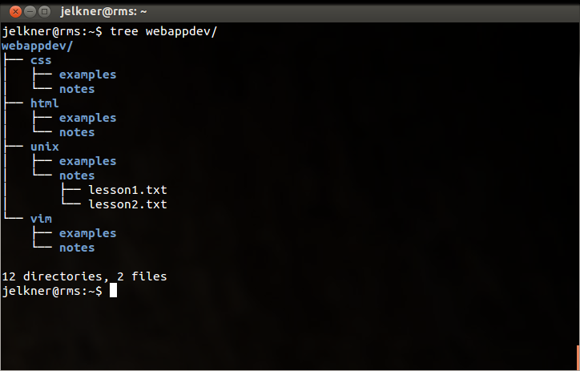
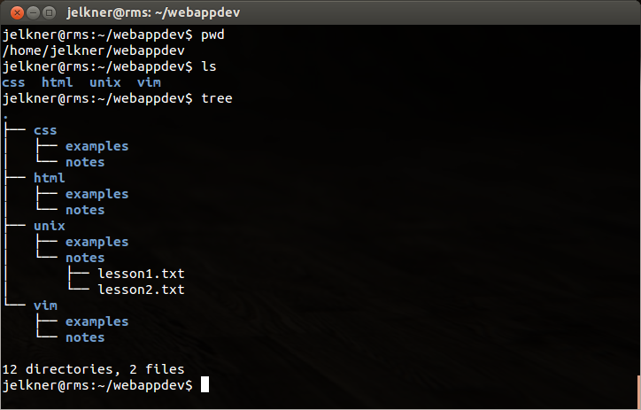

A file on a modern computer system is a named block of information accessible to a computer program and stored on some type of non-volatile memory .
Files can contain both programs and data, and data files can store text, images, sound, video, and many other kinds of data. The two most common types of data files for web designers are text files and image files.
Operating systems organize files through the use of a file system. File systems provide tools for the management of files and directories. A directory (or folder) is a special type of file that can contain other files and directories within it. Directories are used to organize files to make them easier to find.
Since a directory can have directories inside it, and those directories can directories inside them, and so on, we end up with a tree structure for the file system.

The screenshot above shows the
tree program display
of a directory named webappdev that has four subdirectories named
css, html, unix, and vim.
Each of these subdirectories has two more subdirectories named
examples and notes. The notes directory
under unix contains two files, lesson1.txt and
lesson2.txt.
A modern computer system has hundreds of thousands of files and directories. By utilizing the tree structure of the file system, it becomes possible to organize and manage these hundreds of thousands of files.
At the top of the Unix file system is what is called the root directory,
which is always just / in Unix. The absolute path to
any file in the filesystem is the sequence of directories, starting from the
root and ending with the file.
The easiest way to show how this works is by example. The following diagram shows part of a Unix filesystem tree.
The absolute path to the file lesson1.txt is:
/home/jelkner/webappdev/unix/notes/lesson1.txt
The absolute path to a file in the file system can be long, and it is normally
the case that the user is interested in files that are located in only one
small part of the system, located near
the user. By
near the user
we mean near in the tree to the user's
current
working directory.
Again, it's much easier to show you than to tell you.

The screenshot above shows the
pwd program displaying the
current working directory as /home/jelkner/webappdev. Next
it shows ls being run, with
the css, html, unix, and
vim directories as output. Lastly, tree is run
again, this time with no
argument.
The relative path from the current working directory to the file
lesson1.txt is:
unix/notes/lesson1.txt
Notice that relative paths do not start with a slash (/).
storage) on the computer systems you use. What do you think volatile memory is?